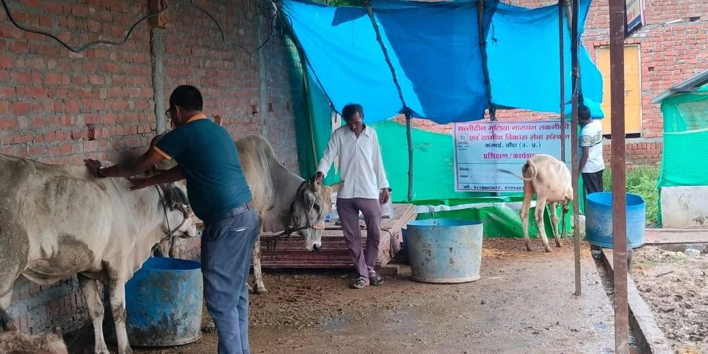

Takniki · Gramin Vikas · Seva — Technology, rural development, service
Livelihood, dignity and self-reliance for every village of Bundelkhand
Since July 2009, SMNTGVSS has worked with marginalized rural communities of Banda — one of India’s most drought-prone regions — on livelihoods, women’s leadership, skills, cattle welfare and natural resources.



Rooted in Banda, working for the most marginalized
Sattidin Muliya Narayan Takniki Evam Gramin Vikas Seva Sansthan is registered under the Societies Registration Act, 1860 (Regd. No. 223/2009-10) and headquartered in Banda, Uttar Pradesh. It works through a participatory, community-rooted approach across Bundelkhand.
- Community Gaushala and SHG models proven in the field
- Locally recruited staff with deep community roots
- Registered, CSR-eligible and audit-ready
Modest numbers, real change
Figures from the organization’s programme records, kept modest and in line with its operational capacity.
Where we work
Connected programmes for rural livelihoods, people and the environment.
Cattle Welfare & Gaushala
Community Gaushala at Karbai Johari with fodder, water, shelter, hygiene and veterinary support for stray and abandoned cattle.
Learn more →Women Empowerment & SHGs
Formation and strengthening of women's Self-Help Groups, leadership training, rights education and linkage to NRLM.
Learn more →Skill Development & Digital Literacy
A computer literacy centre for rural youth in Banda, plus vocational and employment-readiness training.
Learn more →Sustainable Agriculture
Support to small and marginal farmers through improved practices, input support, market linkage and farmer awareness.
Learn more →Organic & Natural Farming
Training in organic manure and Ghanjeevamrit preparation to improve soil health and reduce input costs.
Learn more →Watershed & Water Conservation
Water harvesting, conservation and sustainable water management in drought-prone Bundelkhand.
Learn more →Community Gaushala, Karbai Johari
- Challenge: stray cattle without shelter, fodder or water; crop damage and road accidents
- Action: a community-managed Gaushala with green and dry fodder, clean water, hygiene and local veterinary care
- Result: 50+ cattle sheltered, less crop damage, women-led daily management, model replicated in neighbouring villages

From a widow with few options to the leader of eight women volunteers who run the village Gaushala every day.
Smt. Savitri Devi · Karbai Johari, Banda
Savitri Devi joined the Gaushala management committee when SMNTGVSS set up the community cattle shelter in her village. Through training and mentorship in animal care, record-keeping and community coordination, she now leads the daily feeding, health monitoring and cleanliness work.
Her journey has inspired other women in the village to take part in development work, and she was recognized as a community champion by the district administration.
Moments from the field


Working together


Office bearers
Alok Singh
Strategic leadership, institutional direction and community representation.
Rama Devi Sahu
Supports board leadership, governance oversight and coordination.
Lallu Prasad Sahu
Coordinates administration, operations and board activities; 15+ years in development.
Visit or call us
- Registered officeVillage Karbai, Post Jaurahi, Tehsil Banda, District Banda, Uttar Pradesh – 210001
- Administrative officeA/235, Awas Vikas Colony, Banda, Uttar Pradesh – 210001
- Phone / WhatsApp+91 91188 05877 · Office: 09450-986795
For CSR teams and institutions
We share registration documents and prepare a project proposal and budget for each partnership after a needs discussion. We respond within 48 hours.